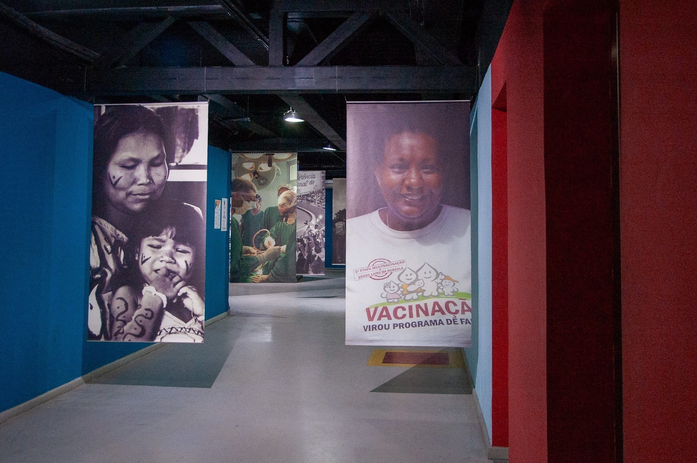
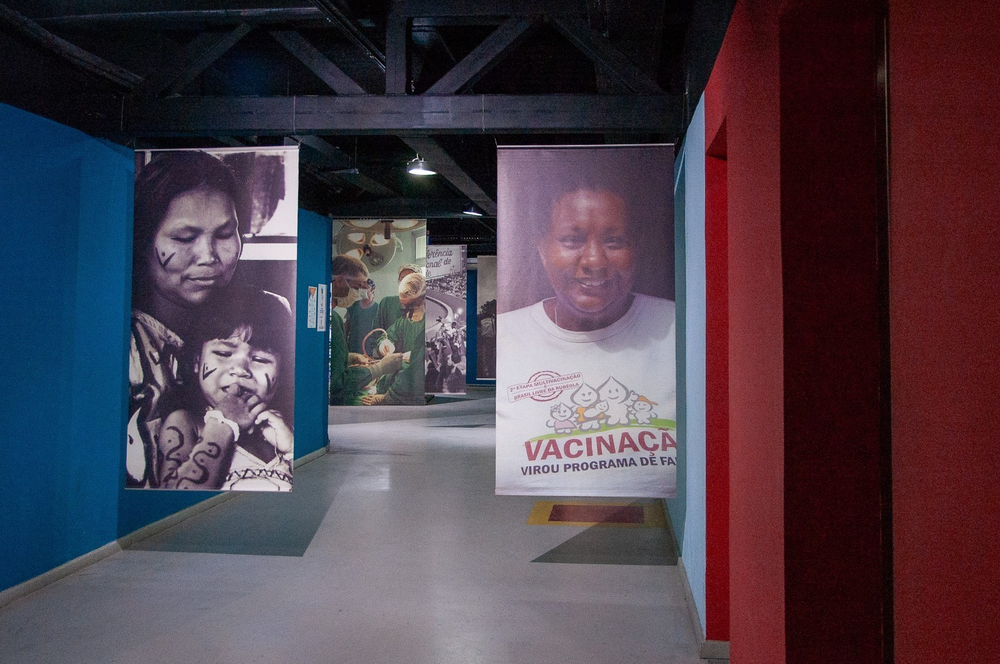

Pantanal Fluminense
Em atividade desde julho de 2010, o Museu Ciência e Vida, tem como missão popularizar e difundir a cultura, a ciência e a arte. Ampliando sua função social, o grande desafio do museu é estimular nos visitantes, diferentes sensações que os levem a novas experiências do saber e despertar o gosto pela ciência. Atualmente, a instituição oferece gratuitamente várias atividades culturais, artísticas e educativas, além das exposições: oficinas para professores, programas de atendimento diferenciado para grupos, oficinas de robótica, atividades lúdicas educacionais, cineclube, palestras e seminários, além das espetaculares sessões de planetário.
CEP: 25071-160
Bairro: Jardim Vinte e Cinco de Agosto, Duque de Caxias
UF: RJ
Cidade: Duque de Caxias
Site: Clique aqui
Telefone: (21) 2334-1574
E-mail: recepcaomcv@gmail.com
Possui acessibilidade
Terça a sexta, aberto das 9 às 17
Sábado a segunda, fechado